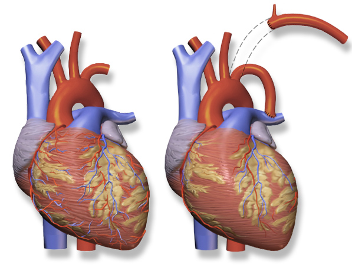
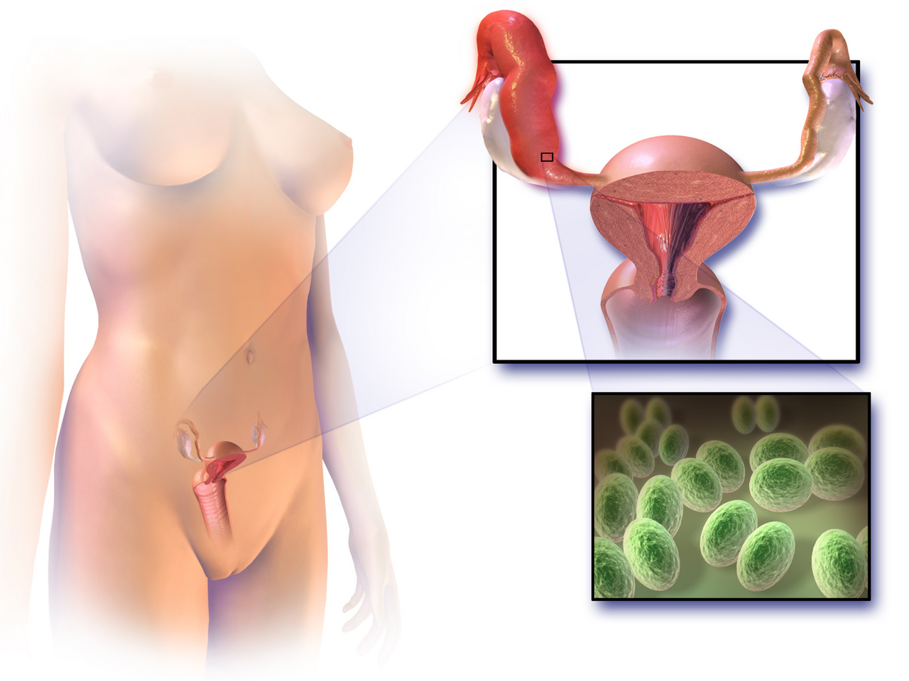
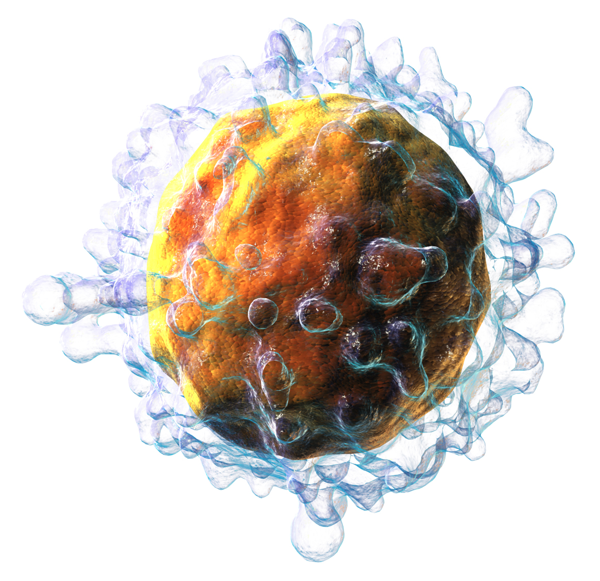
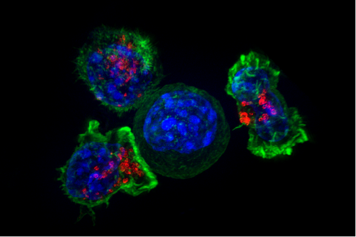
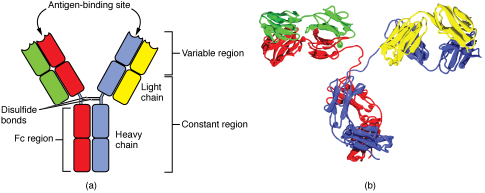

The Lymphatic and Immune Systems
Every minute of every day your capillaries leak. About 20 liters of fluid is pushed out into the tissues each day. Only about 17 liters is pulled back in by oncotic pressure. Oncotic pressure is the inward pull made by plasma protein. That leaves about 3 liters behind, and it carries protein with it. If that fluid stayed there you would drown in it. That would take about a day. The space between cells is called the interstitium. The lymphatic system is the low-pressure drain that picks that fluid up. That drain samples fluid from every tissue in the body. So evolution built the immune system on top of it. Lymph nodes are the checkpoints. Drained antigen meets the lymphocytes that recognize it there. This module treats immunity as physiology, not as a list of names. We will ask what pushes lymph along and what holds it back. We will ask how a cell tells self from non-self. It uses nothing but how tightly a receptor binds. We will ask how inflammation is a controlled change in capillary pressure and leakiness. And we will find the feedback loops. They keep a defense from destroying the host.
By the end of this module you can
- Use the Starling equation. Show why capillaries filter more than they take back over 24 hours. Explain why lymph has to form. It is not optional.
- Name the pressures and valves that move lymph. Include lymphangion contraction, the skeletal muscle pump and the respiratory pump. Predict where edema, or swelling, appears when one of them fails.
- Tell innate immunity from adaptive immunity. Use speed, how picky each is, and whether it remembers. Then trace inflammation in order. It runs from PAMP recognition, to widened vessels, to leakier walls, to chemotaxis and diapedesis.
- Draw the fever control loop. It is a negative-feedback system with a reset set point. Name the variable, the sensor, the integrator, the effector and the response.
- Explain clonal selection. Explain positive and negative selection in the thymus. Say how self-tolerance is built rather than inherited.
- Compare MHC class I and MHC class II presentation. Predict which T-cell subset answers each one.
- Describe how a cytotoxic T lymphocyte kills using perforin and granzyme. Say how helper T cells turn the response up. Say how regulatory T cells turn it down.
- Compare the primary and secondary antibody responses using real numbers. Sort immunity as active or passive, and as natural or artificial.
- Explain hypersensitivity, autoimmunity and immunodeficiency. Each one is a named control step that failed. None of them is simply “weak” or “strong” immunity.
Section 1Lymph: the fluid the circulation cannot get back

Why filtration always wins over 24 hours
Fluid crossing a capillary wall follows the Starling relationship. It is written Jv = Kf [(Pc − Pi) − σ(πc − πi)]. Jv is the net flow. Kf is the filtration coefficient. It says how leaky the wall is and how much surface it has. Pc and Pi are the hydrostatic pressures in the capillary and in the tissue. Hydrostatic means push. πc and πi are the matching colloid osmotic, or oncotic, pressures. σ is the reflection coefficient. It runs from 0 to 1 and says how well the wall holds protein back. In a typical body capillary, Pc starts near 35 mmHg at the arteriolar end. It falls to about 15 to 18 mmHg at the venular end. Meanwhile πc stays near 25 to 28 mmHg. That is because albumin does not cross freely. Normal plasma albumin runs 3.5 to 5.0 g/dL. Tissue pressure Pi sits a little below atmospheric in most tissues, around −2 mmHg. And πi is a small but real 3 to 8 mmHg. A little protein does escape.
Run those numbers and a pattern appears. The arteriolar end filters fluid out. The venular end takes fluid back. The two do not cancel. Filtration beats reabsorption by roughly 15 percent. Across the whole body that is roughly 20 liters filtered and 17 liters reabsorbed per day. About 3 liters is left stranded in the interstitium. Values of 2 to 4 liters are commonly quoted. There is a worse problem. The albumin that escaped cannot diffuse back against its own concentration gradient. If it piled up, πi would climb. The oncotic pull inward would weaken. Filtration would then speed up and feed on itself. The lymphatic system exists to break that spiral. It removes both the water and the protein. That holds πi low and Pi negative.
This is the most useful way to think about lymphatics in a physiology course. They are not a second circulation with a pump of their own. They are a pressure-relief drain on a leaky system. The system does other jobs too. It absorbs fat from food. It delivers antigen to nodes. It houses lymphocytes. All of that is extra use of plumbing that was built for fluid balance.
Structure that follows from the job
A lymphatic capillary is built to be a one-way inlet at very low pressure. Its endothelial cells overlap like roof shingles. They do not form tight junctions. Each flap is tied to nearby collagen by anchoring filaments. When the volume of tissue fluid rises, the tissue swells. The filaments pull the flaps outward and the gaps open. So this is a physical valve. The fluid it removes is what opens it. When lymph inside the vessel presses out, the flaps shut. The result is a one-way gate. Fluid, protein, cell debris and whole cells get in easily. Bacteria, dendritic cells and cancer cells all ride in that way. None of them can leave the way they came.
Lymphatic capillaries drain into collecting vessels. Those vessels have smooth muscle and half-moon valves. Lymph then passes through lymph nodes, into trunks, and finally into two end ducts. The right lymphatic duct drains the right upper quadrant of the body. That is the right head, neck, arm and thorax. It empties into the right subclavian vein. The thoracic duct drains everything else, roughly 75 to 80 percent of all lymph. It starts at the cisterna chyli. It empties where the left subclavian and internal jugular veins meet. Total flow is modest. The thoracic duct carries about 100 mL per hour at rest. Overall lymph flow is roughly 120 mL per hour, or some 2 to 4 liters per day. Exercise can raise that more than tenfold.
Two tissue features are worth remembering. They explain patterns you will see in patients. Lacteals are the lymphatic capillaries inside the villi of the intestine. They absorb long-chain fatty acids packed into chylomicrons. Those packages are too large for blood capillaries. The milky lymph that results is called chyle. A torn thoracic duct spills it into the pleural space as a chylothorax. The central nervous system was long said to have no lymphatics. We now know it has meningeal lymphatic vessels. It also has a clearance route around its vessels called the glymphatic system. That is why poor clearance now comes up in talks about neurodegenerative disease.
What actually drives the flow
Humans have no lymphatic heart. Yet lymph must climb from the foot to the neck against gravity. Flow still follows the Ohm’s-law analog Q = ΔP / R. So the question is where ΔP comes from. Three sources supply it. First comes the vessel’s own squeeze. The piece of a collecting vessel between two valves is called a lymphangion. Its smooth muscle contracts on its own 6 to 10 times per minute at rest. Stretch it and the rate can reach about 30 per minute. Each beat generates 5 to 20 mmHg. So each lymphangion is a tiny heart, and they sit in a line. Stretch raises both rate and force. That is a length-tension relationship, much like Starling’s law of the heart. It makes lymph output match lymph load on its own.
Second comes compression from outside. Contracting skeletal muscle squeezes the vessels. The valves turn that squeeze into forward flow. The venous system works the same way. Third comes the respiratory pump. The thorax expands when you breathe in. Pressure inside the thorax drops to about −6 to −8 cmH2O. The diaphragm descends at the same time and raises pressure in the abdomen. Lymph moves up the thoracic duct down that pressure difference. Nothing is sucked. Flow always follows a pressure difference. Arterial pulsation against nearby lymphatics adds a smaller fourth push. All three major mechanisms need working valves. A failed valve turns a pump into a sloshing reservoir.
Flow depends on movement. So staying still lowers it. That is why a limb that is still, hanging down and warm swells up. It is also why we treat that swelling with elevation, compression and active movement. Together they lower Pc, raise the driving pressure gradient and work the lymphangion pump. It explains lymphatic drainage massage too. Only stroking from the far end toward the trunk goes with the valves.
Edema as a Starling failure you can localize
You can feel edema once interstitial volume rises roughly 2.5 to 3 liters above normal. That is also about when body weight has gone up a few kilograms. Every cause of edema changes one Starling term or the lymphatic drain. Name the term and you have named the mechanism.
| Mechanism | Starling term changed | Typical cause | Clue at the bedside |
|---|---|---|---|
| Push pressure in the capillary rises | Pc up | Heart failure, blocked veins, deep vein thrombosis, pregnancy | Pitting, worse in the lower parts, often on both sides. One side only if one vein is blocked |
| Pull from plasma protein falls | πc down | Liver failure, nephrotic syndrome, severe malnutrition (albumin below about 2.5 g/dL) | All over the body, often with ascites and puffy eyelids |
| The wall gets leakier | Kf up, σ down | Inflammation, burns, sepsis, anaphylaxis | Warm, red, protein-rich fluid. It comes on fast |
| The lymphatic drain is blocked | Lymph flow down | Node dissection, radiation, filariasis, tumor invasion | Non-pitting later, thickened skin, in one region rather than all over |
Lymphedema is the case that teaches the most. Here the drain is the problem, not the leak. Protein builds up in the interstitium. πi climbs. So the swelling keeps itself going, and it later turns fibrotic. That is why arm swelling after axillary node dissection does not simply resolve with elevation. Venous edema does. It is also why infection risk rises in that limb. Stagnant, protein-rich fluid that never reaches a node is fluid the immune system never checks.
Capillaries filter about 3 liters more protein-containing fluid per day than they take back. The lymphatic circuit has valves and squeezes on its own. It is the only route back to the blood for that fluid and its albumin.
Section 2Innate defense: barriers, inflammation and fever

The first two lines: surfaces and sentinels
Innate immunity is fast. It works in minutes to hours. It is non-specific. That means it answers broad classes of molecules, not one exact target. It also does not improve with repetition. Its first line is physical and chemical. The outer skin is keratinized stratified squamous epidermis. It is dry, shedding and mechanically tough. The skin surface sits at pH 4 to 6. Gastric contents sit at pH 1.5 to 3.5. Vaginal secretions sit near pH 4, thanks to lactobacilli. Mucous membranes trap particles in a thick, viscous layer. The mucociliary escalator sweeps that layer toward the pharynx at roughly 1 cm per minute. Lysozyme in tears and saliva cuts open bacterial cell walls. Defensins punch holes in membranes. The resident microbiota takes up binding sites and eats nutrients a pathogen would want. None of this involves lymphocytes at all. A very large share of infection prevention is mechanical and chemical.
The second line starts when something crosses. Macrophages, dendritic cells, mast cells and epithelial cells carry pattern recognition receptors. Toll-like receptors are the best known ones. They bind pathogen-associated molecular patterns, or PAMPs. Examples are lipopolysaccharide from Gram-negative walls, peptidoglycan, flagellin, unmethylated CpG DNA and double-stranded RNA. Microbes need these molecules and host cells do not have them. That is why one fixed, germline-encoded receptor can be both broad and safe. Damaged host cells release damage-associated molecular patterns, or DAMPs. ATP and nuclear HMGB1 are two of them. They set off the same machinery. That is why a sterile crush injury looks exactly like an infected one.
Inflammation is a controlled change in Starling terms
The four classical signs are redness, heat, swelling and pain. In Latin they are rubor, calor, tumor and dolor. Loss of function is the fifth. Each one is a mechanical consequence you can predict. Sentinel cells act first. Mast cells release histamine within seconds. Prostaglandins, leukotrienes, bradykinin and cytokines follow over minutes to hours. Those cytokines include TNF-α, IL-1 and IL-6. Histamine and nitric oxide relax arteriolar smooth muscle. A wider arteriole means less resistance upstream of the capillary bed. By Q = ΔP / R, both flow and capillary hydrostatic pressure Pc rise. More warm arterial blood means redness and heat.
At the same time the endothelial cells of postcapillary venules contract. They pull their junctions apart. In Starling terms Kf rises and σ falls. Protein escapes, so πi climbs while πc falls in that spot. Pc is up and the oncotic gradient has collapsed. Filtration surges, and that surge is the swelling. Its fluid is a protein-rich exudate. Heart failure makes a protein-poor transudate instead. The exudate is not waste. It carries complement, antibody, fibrinogen and clotting factors into the tissue. It walls the area off with fibrin. It dilutes toxins. Pain comes from bradykinin and prostaglandins making nociceptors more sensitive, plus mechanical stretch. Pain makes you rest the injured part.
Leukocytes arrive in four steps. Slowed flow lets neutrophils drift to the vessel margin, which is margination. Selectins on activated endothelium catch and release them, so they roll. Chemokines then switch on integrins and the cell adheres firmly. Last, the cell squeezes between endothelial cells to reach the tissue. That step is diapedesis, or emigration. It then crawls up a chemical gradient toward the source, and that crawl is chemotaxis. The gradient is made of chemokines, complement C5a and bacterial peptides. Neutrophils are normally 40 to 70 percent of a white count of 4,500 to 11,000 cells per µL. They arrive within an hour and dominate for one to two days. Monocytes follow and mature into macrophages that clear debris and run repair. Pus is the residue. It is dead neutrophils, liquefied tissue and microbes.
Complement, interferons and natural killer cells
Complement is about 30 plasma proteins. The liver makes most of them. They circulate switched off. Then they turn on in a cascade with genuine positive-feedback amplification. One activated molecule cleaves many downstream molecules. So a handful of triggering events yields a large response in seconds. Three pathways all converge on cleaving C3. The classical pathway starts with antibody, IgG or IgM, already bound to antigen. The lectin pathway starts with mannose-binding lectin on microbial sugars. The alternative pathway starts when C3 hydrolyzes on its own. It is then stabilized on a microbial surface. All three then do three jobs. C3b coats the microbe for phagocytosis, which is opsonization. C3a and C5a recruit and activate leukocytes. They also degranulate mast cells. That is inflammation and chemotaxis. C5b through C9 assemble the membrane attack complex. That is a pore. Water and ions rush in and the cell lyses.
Amplifying cascades are dangerous. That is why host cells carry regulatory proteins. Decay-accelerating factor and CD59 are two of them. They dismantle complement on self surfaces. Complement makes a good point about positive feedback. Physiology uses it only where an explosive all-or-none response is wanted. It also needs a separate braking system. Clotting and the action potential upstroke are the other classic examples.
Viruses need different tools. A virus inside a cell is invisible to antibody and complement. An infected cell detects viral nucleic acid and secretes type I interferons, IFN-α and IFN-β. These bind neighboring cells. The neighbors then make enzymes that degrade RNA and block translation. The infected cell is warning its neighbors to become poor hosts. Interferon is antiviral in general rather than specific to one virus. It also causes much of the malaise, the awful feeling, of a viral illness. Natural killer cells patrol for cells that have lost their MHC class I molecules. Viruses and tumors drop class I to hide. NK cells kill those cells with perforin and granzymes. NK cells count as innate. They need no prior exposure and use no rearranged receptor. Even so, they kill by the same molecular route cytotoxic T cells use.
Fever: a negative-feedback loop with a moved set point
Fever is the clearest control-loop lesson in immunology. Core temperature normally sits near 37 °C. The usual range is about 36.5 to 37.5 °C. It swings roughly 0.5 °C across the day and is lowest around 4 a.m. The regulated variable is core temperature. The sensors are central thermoreceptors. They sit in the preoptic area of the anterior hypothalamus. Peripheral skin thermoreceptors report in too. The integrator is the hypothalamic thermoregulatory center. It compares the sensed temperature with a set point. The effectors are cutaneous arterioles, sweat glands, skeletal muscle and brown adipose tissue.
In fever, exogenous pyrogens start the process. Bacterial lipopolysaccharide is one. They drive macrophages to release endogenous pyrogens of our own. Those are IL-1, IL-6 and TNF-α. They act on the vascular organ of the lamina terminalis. That raises prostaglandin E2 in the hypothalamus. PGE2 raises the set point, say from 37.0 to 39.0 °C. Nothing is broken. The loop now defends the new target with the same negative feedback. Actual temperature sits below the new set point. So the patient feels cold, vasoconstricts, gets goose bumps and shivers. That is the chill phase. It lasts until temperature rises to target. When the pyrogen clears, PGE2 falls and the set point drops below actual temperature. Now the patient feels hot, vasodilates and sweats profusely. That is the crisis, or defervescence. Moderate fever is useful. It speeds up enzyme and leukocyte activity. It hides plasma iron and zinc that bacteria need. It slows replication of some pathogens. Above roughly 40 to 41 °C the cost wins. Proteins denature and seizures can happen.
Innate defense is fast and needs no template. Inflammation is a deliberate local rise in Pc and Kf. That floods the tissue with plasma proteins and leukocytes. Fever is ordinary negative feedback. It defends a set point that was raised on purpose.
Section 3Building a specific immune system: lymphocytes, antigen presentation and clonal selection

Diversity first, antigen second
The central idea of adaptive immunity is counterintuitive, so say it bluntly. Your lymphocytes are already specific for antigens you have never met. Some of them fit molecules that do not exist in nature. During development, each B cell and T cell cuts and rejoins its own receptor gene segments. It does that at random. Those segments are called V, D and J. The cell also adds or deletes a few nucleotides at each join. This is somatic recombination. It starts with a few hundred gene segments. From those it builds an estimated 10 to the 11th distinct receptor specificities. That is a combinatorial trick, not a library of stored blueprints. Each cell then commits to one specificity. It expresses thousands of identical copies of that one receptor.
Clonal selection does the rest. When an antigen appears, it binds only the rare cells whose receptors already fit. That binding, plus the right co-stimulation, triggers those cells to proliferate. A single selected clone can expand roughly 1,000-fold in about a week. Some daughters become short-lived effectors. Others become long-lived memory cells. So antigen acts as a selective pressure on a population that already exists. It works exactly as natural selection does. It is a striking case of an evolutionary algorithm running inside one organism over days.
The two lymphocyte lineages see different things. A B-cell receptor is a membrane-bound antibody. It binds free, native, three-dimensional antigen. That could be a whole toxin. It could be a surface protein on an intact bacterium. It could be a polysaccharide. A T-cell receptor cannot do that. It binds only a short peptide fragment. That fragment must sit in a groove on another cell’s surface. The groove belongs to a major histocompatibility complex molecule, or MHC. That restriction forces T cells to deal with cells rather than with loose molecules. It is also the reason antigen presentation exists.
MHC class I and class II: two surveillance channels
MHC class I molecules sit on essentially every nucleated cell. They sample peptides made inside the cell. Cytosolic proteins are chopped up by the proteasome. The pieces are carried into the endoplasmic reticulum and loaded onto class I. Then they are displayed. A healthy cell shows self peptides and is ignored. A virus-infected cell shows foreign peptides and is flagged. So does a cell making a mutated tumor protein. CD8 T cells read class I. CD8 physically binds the invariant part of class I.
MHC class II molecules sit only on professional antigen-presenting cells. Those are dendritic cells, macrophages and B cells. They sample peptides from outside the cell. Material is phagocytosed or endocytosed. It is degraded in the phagolysosome. It is loaded onto class II in that same vesicle. CD4 T cells read class II, because CD4 binds class II. The logic is elegant. An endogenous threat means a compromised cell. It is reported on class I to a killer. An exogenous threat means material collected from outside. It is reported on class II to a coordinator.
| Feature | MHC class I | MHC class II |
|---|---|---|
| Where it is found | All nucleated cells (not mature red cells) | Dendritic cells, macrophages, B cells |
| Where the peptide comes from | Endogenous proteins made in the cytosol | Exogenous material taken in from outside |
| Where it is loaded | Endoplasmic reticulum, after the proteasome | Endosome or phagolysosome |
| Read by | CD8 cytotoxic T cells | CD4 helper T cells |
| Usual outcome | Kill the cell that is presenting | Activate and direct other cells |
| Peptide length | About 8 to 10 amino acids | About 13 to 25 amino acids |
MHC molecules are the most polymorphic proteins in the human genome. There are thousands of alleles across the HLA loci. That diversity is insurance for the population. A pathogen may evolve peptides that one person’s HLA set cannot display. A neighbor’s set will still display them. It is also why transplant rejection happens. Foreign MHC is itself a powerful antigen. That is why solid organ grafts need tissue typing and immunosuppression.
Making tolerance: two selections in the thymus
A randomly generated receptor repertoire will always contain receptors that bind self. So tolerance has to be built. It is not inherited. Most of it is built in the thymus. The thymus is largest relative to body size in childhood and shrinks steadily after puberty. Thymocytes arrive from bone marrow. They face two tests in a row over a matter of days.
Positive selection happens in the thymic cortex. It asks one question. Can this T-cell receptor bind self-MHC at all, even weakly? A receptor that cannot engage self-MHC is useless. Every antigen it will ever see is displayed on self-MHC. So those cells die by neglect. Negative selection happens mainly in the medulla. It asks the opposite question. Does the receptor bind self-MHC carrying self peptide too strongly? Medullary epithelial cells use the AIRE transcription factor. AIRE makes them express thousands of tissue-restricted proteins. Insulin, thyroglobulin and myelin are examples. So a developing T cell tours the whole body without leaving the thymus. Strong binders are deleted by apoptosis or diverted into the regulatory T-cell lineage. Only about 2 percent of thymocytes pass both tests. The window is narrow by design. Bind self-MHC weakly, and bind self peptide not at all.
B cells run an analogous program in bone marrow. Strongly self-reactive B cells are deleted. Some get a second chance to rearrange a new light chain. That is called receptor editing. Neither system is perfect. So peripheral tolerance provides backup. A self-reactive cell that escapes is anergized if it meets antigen without co-stimulation. It can also be suppressed by regulatory T cells, or deleted. Autoimmune disease is what happens when these layers fail. AIRE can be defective. Regulatory T cells can be deficient, as in IPEX syndrome. Or a microbial epitope can look too much like a self epitope. Antibodies raised against the microbe then cross-react. Streptococcal antigens and cardiac valve tissue in rheumatic fever work that way.
Adaptive specificity is generated before antigen ever arrives. Random receptor recombination makes it. Thymic positive and negative selection then curate it into tolerance. So antigen merely selects a clone that already exists and expands it.
Section 4Cell-mediated immunity: T cells and the killing of compromised cells

Activation needs two signals, and the second one prevents autoimmunity
A naive T cell never stops traveling. It passes through blood, lymph node and lymph roughly one to two times per day. All the while it scans dendritic cells for a peptide it recognizes. Recognition alone is not enough. Signal 1 is the T-cell receptor binding peptide-MHC, with CD4 or CD8 as co-receptor. Signal 2 is co-stimulation. B7 molecules, CD80 and CD86, on the antigen-presenting cell bind CD28 on the T cell. B7 appears only once the presenting cell has itself detected a PAMP or DAMP. Signal 3 is the cytokine environment. It biases the T cell toward one functional program rather than another.
The design point is that signal 2 encodes danger. A dendritic cell displaying self peptide in a quiet tissue does not express B7. So a self-reactive T cell gets signal 1 with no signal 2. It becomes anergic, meaning functionally silenced, or it dies. This two-key requirement is peripheral tolerance implemented as a logic gate. It is also why adjuvants are added to vaccines. The adjuvant supplies the innate danger signal that licenses co-stimulation. Drugs exploit the same gate. Abatacept blocks B7 to damp autoimmunity. Checkpoint inhibitors release the CTLA-4 and PD-1 brakes to unleash T cells against tumors. The cost is autoimmune side effects.
Once activated, the T cell secretes IL-2. It also expresses high-affinity IL-2 receptors. So it drives its own proliferation in an autocrine loop. That is positive feedback used deliberately to build a clone quickly. Clonal expansion takes about 4 to 7 days. That is why a first infection makes you sick for several days. Adaptive control has not taken hold yet.
Division of labor among T-cell subsets
CD4 helper T cells are the conductors. The cytokine environment decides which subset they become. TH1 cells are driven by IL-12. They secrete interferon-gamma and supercharge macrophages against intracellular bacteria such as Mycobacterium tuberculosis. The granuloma is a TH1 product. TH2 cells are driven by IL-4. They secrete IL-4, IL-5 and IL-13. They drive IgE class switching and recruit eosinophils. They handle helminths. Misdirected, they produce allergy. TH17 cells recruit neutrophils to mucosal surfaces against extracellular bacteria and fungi. Follicular helper T cells stay in lymph node germinal centers. They give B cells the help needed to switch class and mature affinity. Regulatory T cells carry CD4 with CD25 and FoxP3. They secrete IL-10 and TGF-β and actively suppress the others.
CD8 cytotoxic T lymphocytes are the executioners. They scan class I on every nucleated cell. When the receptor engages a foreign peptide, the CTL forms an immunological synapse. It then releases granules into that narrow cleft. So neighboring healthy cells are spared. Perforin polymerizes in the target membrane and forms a pore. Granzymes are serine proteases. They enter through the pore and activate the caspase cascade. That drives the target into apoptosis. Apoptosis matters more than plain lysis. The cell shrinks. It fragments its DNA, viral genomes included. It packs the remains into membrane-bound bodies for phagocytosis. So viral particles are not spilled and inflammation is minimized. The CTL then detaches, reloads its granules and kills again, one target after another.
Memory T cells persist for years to decades. Central memory cells recirculate through lymph nodes. Effector memory cells patrol tissues. Tissue-resident memory cells stay permanently in skin, gut and lung. Their advantage is threshold and speed, not different chemistry. They are more numerous than the original naive clone. They need less co-stimulation. They reach effector function in one to three days rather than seven.
| Cell | Marker | Recognizes | Main action |
|---|---|---|---|
| Helper T (TH1, TH2, TH17, TFH) | CD4 | Peptide on MHC II | Releases cytokines. Activates macrophages, B cells and CTLs |
| Cytotoxic T | CD8 | Peptide on MHC I | Uses perforin and granzyme to drive infected or tumor cells into apoptosis |
| Regulatory T | CD4, CD25, FoxP3 | Self and foreign peptide | Suppresses with IL-10 and TGF-β. Keeps peripheral tolerance |
| Memory T | CD4 or CD8 | The original epitope | Fast recall response at a low threshold |
| Natural killer (innate) | CD16, CD56 | Absent MHC I, or a cell coated with antibody | Kills with no prior sensitization. Performs ADCC |
Turning the response off, and what happens when it cannot be turned off
An immune response you could not stop would be as deadly as one that never started. Several negative-feedback brakes operate together. As antigen is cleared, signal 1 disappears. The stimulus for proliferation vanishes. That is the simplest and most important brake. It is a genuine negative-feedback loop, because the output, pathogen clearance, removes the input. Activated T cells then upregulate CTLA-4. CTLA-4 outcompetes CD28 for B7 and delivers an inhibitory signal. They also upregulate PD-1, which PD-L1 on tissue cells engages. Most of the expanded clone then dies by activation-induced cell death. Roughly 5 to 10 percent stays on as memory. Regulatory T cells suppress bystander activation throughout.
Failure at these steps produces recognizable disease. Cytokine storm is unchecked positive feedback. It shows up in severe sepsis, in some viral infections and after certain CAR-T therapies. TNF-α and IL-6 drive systemic vasodilation, capillary leak and hypotension. That inflammation is appropriate locally and catastrophic globally. The opposite pole is HIV. It infects CD4 cells through the CD4 molecule plus a CCR5 or CXCR4 co-receptor. Step by step it destroys the conductor of the whole orchestra. A normal CD4 count is 500 to 1,500 cells per µL. As it falls, cell-mediated immunity fails first. Below 200 cells per µL the patient is defined as having AIDS. Now organisms that a healthy person clears without noticing become dangerous. Pneumocystis jirovecii is one. Losing this one cell type disables antibody responses too. Most B-cell class switching needs helper T-cell input.
T cells need antigen plus a danger-dependent co-stimulatory signal. Then the work divides. CD4 cells direct the response. CD8 cells induce apoptosis in compromised cells. CTLA-4, PD-1, regulatory T cells and antigen clearance provide the off switch.
Section 5Humoral immunity: antibodies, memory and the basis of vaccination

Antibody structure predicts antibody function
An immunoglobulin monomer is two identical heavy chains and two identical light chains. Disulfide bonds join them into a Y. The tips of the arms are the variable regions. Hypervariable loops from both chains form them. That gives two identical antigen-binding sites per monomer. The stem is the constant region, the Fc. The Fc is the part that talks to the rest of the immune system. It binds Fc receptors on phagocytes and NK cells. It also binds C1q and starts the classical complement pathway. So recognition and execution are separate modules. That is why class switching works. The same specificity can be re-issued with a different constant region.
Antibodies do not kill anything by themselves. They work by five mechanisms. Every one of them is either marking or blocking. Neutralization covers the binding site of a toxin. It covers the attachment protein of a virus too, so it cannot dock. Opsonization coats a microbe so that phagocyte Fc receptors can grip it. That raises phagocytosis rates by orders of magnitude. Agglutination cross-links particles into clumps that phagocytes clear efficiently. Precipitation does the same for soluble antigen. Complement activation via bound IgG or IgM produces opsonins, chemoattractants and membrane attack complexes. Antibody-dependent cellular cytotoxicity lets NK cells recognize antibody-coated host cells through CD16 and kill them.
| Class | Form | Share of serum antibody | Distinctive role |
|---|---|---|---|
| IgG | Monomer | About 75 to 80 percent | Main antibody of the secondary response. The only class that crosses the placenta. Half-life about 21 days |
| IgM | Pentamer (10 binding sites) | About 5 to 10 percent | First one made in a primary response. Superb at activating complement and clumping antigen. Too large to cross the placenta |
| IgA | Dimer in secretions | About 10 to 15 percent of serum, dominant in secretions | Guards mucosal surfaces and breast milk. Neutralizes without inflammation |
| IgE | Monomer | Trace (less than 0.01 percent) | Binds Fc receptors on mast cells and basophils. Parasites and type I hypersensitivity |
| IgD | Monomer | Trace | Sits on the naive B-cell surface as a receptor. Activation signaling |
Two diagnostic rules fall straight out of that table. Detecting IgM against a pathogen means a current or very recent first infection. Detecting IgG alone means past infection or vaccination. IgG crosses the placenta and IgM does not. So a newborn’s own IgM in cord blood means infection happened in the womb. Its IgG is borrowed from the mother and wanes over roughly 6 months. Childhood vaccination schedules are timed around that immunity gap.
The germinal center: how antibodies get better during the response
A naive B cell binds native antigen with the immunoglobulin on its surface. It internalizes that antigen, degrades it, and presents the peptides on MHC class II. A follicular helper T cell specific for the same antigen recognizes that display. It binds CD40 on the B cell through CD40 ligand. Then it secretes cytokines. This is linked recognition, and it is a safety interlock. The B cell must be reacting to the same antigen the T cell already vetted. Only then does the B cell enter a germinal center. There it begins the two processes that define the humoral response.
Class switch recombination swaps the heavy-chain constant region. The variable region stays intact. So the same specificity is re-issued as IgG, IgA or IgE. The T-cell cytokine environment chooses which. Interferon-gamma favors IgG. TGF-β favors IgA. IL-4 favors IgE. Somatic hypermutation is the second process. It drops point mutations into the variable region. The rate is about a million times the normal background. B cells then compete for limited antigen held on follicular dendritic cells. Cells whose mutated receptors bind better get more survival signal. The rest die. That is affinity maturation. It is Darwinian selection running over days inside a lymph node. It is why average antibody affinity can rise 10- to 100-fold over a few weeks. Surviving cells become plasma cells or memory B cells. A plasma cell is an antibody factory. It secretes up to about 2,000 molecules per second.
Some antigens are polysaccharides, such as bacterial capsules. Polysaccharides cannot be presented on MHC. So they are T-independent. They cross-link B-cell receptors directly. They produce mostly IgM. They generate little class switching and poor memory. They work badly in children under 2 years. Conjugate vaccines solve this. They chemically link the polysaccharide to a carrier protein. That recruits T-cell help and turns a weak response into a strong, memory-forming one. That is why the Hemophilus influenzae type b conjugate vaccine works. It nearly wiped out a once-common childhood meningitis.
Primary versus secondary responses, and the four kinds of immunity
The primary response follows a first exposure. It lags about 5 to 10 days while the rare specific clone is selected and expands. Antibody titer rises to a modest peak. IgM dominates it. Lower-affinity IgG appears later. It all declines within weeks. The secondary response follows re-exposure. It begins in 1 to 3 days. Its peak titer is roughly 100- to 1,000-fold higher. High-affinity IgG dominates it. It persists for months to years. Nothing new is invented. There are simply many more precursor cells. They are already class-switched and affinity-matured. They need less help. That difference is the entire physiologic basis of vaccination.
| Type | How acquired | Memory? | Onset and duration |
|---|---|---|---|
| Active natural | Catching the infection | Yes | Slow to start, lasts a long time |
| Active artificial | Vaccination | Yes | Slow to start (often needs boosters), lasts a long time |
| Passive natural | Mother’s IgG across the placenta, IgA in breast milk | No | Works at once, fades over about 6 months |
| Passive artificial | A shot of immunoglobulin or antitoxin, or a monoclonal antibody | No | Works at once, lasts weeks |
Passive immunity buys time and nothing else. No clone is selected, so no memory is formed. The borrowed antibody decays with IgG’s roughly 21-day half-life. That is why a person exposed to rabies or tetanus receives two things. They get immunoglobulin for immediate passive protection. They get vaccine for delayed active protection. The two cover different halves of the time course. Herd immunity is the same idea at the population level. Once the immune fraction exceeds 1 − 1/R0, chains of transmission break. For a highly transmissible agent such as measles that threshold is high, about 92 to 95 percent.
When the system misfires
Hypersensitivity is an immune response with a normal mechanism. The target or the size is wrong. Type I is IgE-mediated. The first exposure sensitizes by loading mast cells with IgE against that allergen. Re-exposure cross-links that IgE. Mast cells then degranulate within minutes. They release histamine, leukotrienes and prostaglandins. Locally this is hay fever or hives. Systemically it is anaphylaxis. Widespread vasodilation and capillary leak crash the blood pressure. Bronchoconstriction and laryngeal edema obstruct the airway. Epinephrine is the antidote precisely because it reverses each mechanism. Alpha-1 vasoconstriction restores pressure and reduces edema. Beta-2 stimulation relaxes bronchi. Beta-1 stimulation supports the heart.
Type II is antibody directed at fixed tissue antigen. A mismatched transfusion is one example. Hemolytic disease of the newborn is another. There an Rh-negative mother is sensitized to the D antigen. She makes IgG that crosses the placenta and destroys fetal red cells. Anti-D immunoglobulin prevents it. That is a deliberate use of passive antibody to block sensitization. Type III is immune complex deposition. Serum sickness and much of systemic lupus erythematosus work this way. Antigen-antibody complexes lodge in vessel walls, glomeruli and joints, and activate complement there. Type IV is the delayed, T-cell mediated reaction. Contact dermatitis, the tuberculin test and graft rejection are type IV. They take 48 to 72 hours because cells must be recruited. Immunodeficiencies are the mirror image. Primary ones include severe combined immunodeficiency. Secondary ones follow HIV, chemotherapy, corticosteroids, malnutrition or splenectomy. Losing the spleen specifically impairs clearance of encapsulated bacteria. The spleen is the filter for blood-borne opsonized organisms.
Humoral immunity works by marking and blocking rather than killing. It improves its own antibodies in germinal centers, through class switching and affinity maturation. It turns a slow, low-affinity primary response into a fast, high-affinity secondary response. Vaccination exists to pre-load that second response.
The module in one breath
Capillaries filter about 20 liters of fluid a day and reabsorb only about 17. The albumin that escapes can never be pulled back osmotically. So a valved lymphatic circuit must recover roughly 3 liters of protein-rich fluid daily. That circuit pumps on its own. It returns that fluid to the subclavian veins. That drainage passes through lymph nodes. So it doubles as an antigen-sampling network. Innate defense acts within minutes. Barriers and chemistry come first. Then pattern recognition receptors detect PAMPs and DAMPs. That triggers inflammation. Inflammation is a deliberate local rise in capillary hydrostatic pressure and permeability. It floods the tissue with complement, antibody and neutrophils. Interferons, natural killer cells and fever join in. Fever is ordinary negative feedback defending a set point that prostaglandin E2 raised. Adaptive immunity is slower, but it is specific and it remembers. Random receptor recombination builds diversity before antigen arrives. Thymic positive and negative selection curate that diversity into tolerance. Antigen then selects the fitting clone and expands it. CD8 cells kill compromised cells displaying foreign peptide on MHC class I. CD4 cells read MHC class II and direct everything else. That includes the germinal center reaction that class-switches and affinity-matures antibody. Regulatory T cells, checkpoint molecules and antigen clearance turn the response off. A failure at each defined step gives hypersensitivity, autoimmunity or immunodeficiency.
Words worth knowing
| Term | What it means |
|---|---|
| Lymph | The roughly 3 liters per day of protein-containing interstitial fluid that enters lymphatic capillaries and is returned to the venous blood. |
| Lymphangion | The piece of a collecting lymphatic vessel between two valves. Its smooth muscle contracts 6 to 10 times per minute and acts as a miniature pump. |
| Starling forces | The hydrostatic and oncotic pressures on each side of a capillary wall. Together they set net filtration: Jv = Kf [(Pc − Pi) − σ(πc − πi)]. |
| Lymphedema | Swelling caused by a failed lymphatic drain. Protein builds up in the interstitium and raises πi, so the swelling keeps itself going. |
| PAMP / DAMP | Conserved microbial molecules, or host molecules released by damage. Pattern recognition receptors such as Toll-like receptors detect them. |
| Diapedesis | A leukocyte squeezing between the endothelial cells of a postcapillary venule to reach the tissue. |
| Chemotaxis | A cell moving up a chemical gradient. Neutrophils crawl toward complement C5a or bacterial peptides that way. |
| Complement | A cascade of about 30 plasma proteins. They opsonize microbes, recruit leukocytes and build the membrane attack complex (C5b through C9). |
| Pyrogen | Anything that causes fever. Exogenous ones such as lipopolysaccharide work by making the body release IL-1, IL-6 and TNF-α, which raise hypothalamic PGE2. |
| Set point | The target value a control system defends. Fever is a raised temperature set point, not a failure of temperature regulation. |
| Clonal selection | The principle that antigen binds and expands lymphocyte clones that already exist. It does not instruct a cell to build a new receptor. |
| MHC class I / II | Display molecules. Class I shows endogenous peptides, sits on all nucleated cells and is read by CD8. Class II shows exogenous peptides, sits on antigen-presenting cells and is read by CD4. |
| Positive and negative selection | The two thymic tests. They keep T cells that bind self-MHC weakly and delete those that bind self peptide strongly. About 2 percent survive. |
| Co-stimulation | The second signal a T cell needs, B7 binding CD28. It appears only with danger. Without it the T cell becomes anergic. |
| Perforin and granzyme | The pore-forming protein and the proteases a cytotoxic T cell or NK cell delivers into a target to induce apoptosis. |
| Regulatory T cell | A CD4, CD25, FoxP3 lymphocyte. It secretes IL-10 and TGF-β to suppress other lymphocytes and maintain peripheral tolerance. |
| Opsonization | Coating a microbe with antibody or C3b so that phagocyte receptors can grip it. Phagocytosis then rises greatly. |
| Class switching | Recombination that replaces the antibody heavy-chain constant region. The specificity stays the same, so IgM becomes IgG, IgA or IgE. |
| Affinity maturation | Selection in germinal centers for B cells whose somatically hypermutated receptors bind antigen better. Average affinity rises 10- to 100-fold. |
| Passive immunity | Transfer of preformed antibody, such as maternal IgG or an immunoglobulin injection. Protection is immediate but temporary, and it creates no memory. |